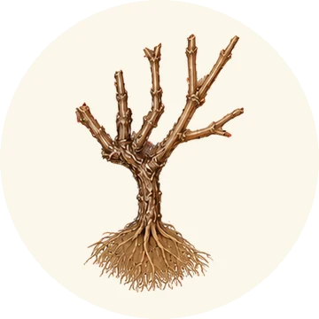

BBCH 00Baggiolini A
1
Dormance hivernale
décembre à février
Dans la vigne
Les feuilles sont tombées, la sève est descendue : la vigne vit au ralenti sur les réserves d’amidon stockées dans ses racines et son bois. Le froid hivernal lève progressivement la dormance des bourgeons.
The leaves have fallen and the sap has withdrawn: the vine idles on the starch reserves stored in its roots and wood. Winter cold gradually lifts the buds’ dormancy.
Au vignoble
La taille, de décembre à mars : le vigneron choisit le bois qui portera la récolte. Sarments broyés ou brûlés, réparation des piquets et des fils.
Pruning, from December to March: the grower chooses the wood that will carry the crop. Cuttings shredded or burned, posts and wires repaired.
Pour les professionnels
- Deux phases
- Endodormance (le bourgeon ne peut pas débourrer, même au chaud), levée par une accumulation de froid ; puis écodormance : le bourgeon attend simplement la chaleur.Endodormancy (the bud cannot burst, even if warm), lifted by accumulated chilling; then ecodormancy: the bud simply waits for warmth.
- Résistance au froid
- Un œil bien aoûté de vinifera supporte souvent −15 à −20 °C. Le gel de février 1956 a détruit une grande partie des vignes de Saint-Émilion et de Pomerol.A well-hardened vinifera bud often withstands −15 to −20 °C. The February 1956 freeze destroyed much of the vineyard in Saint-Émilion and Pomerol.